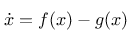
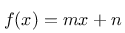
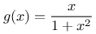
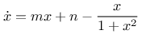
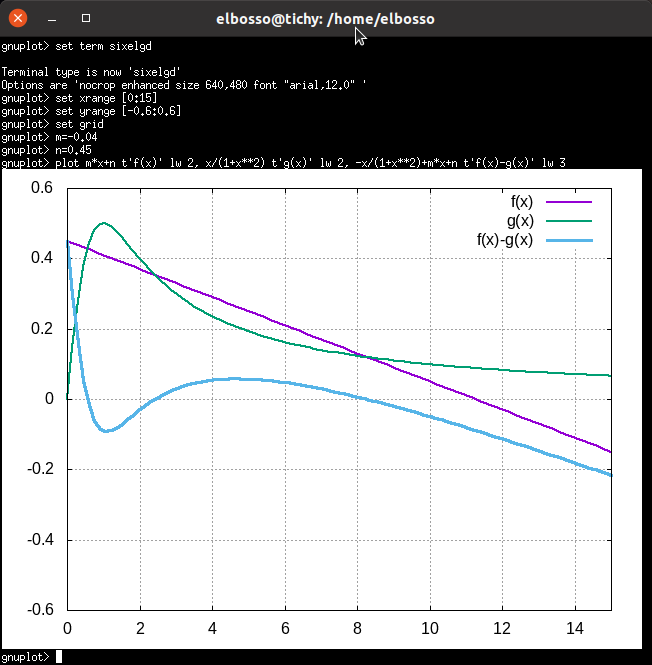
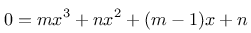
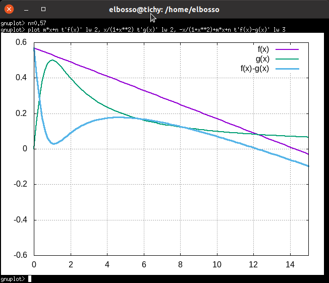
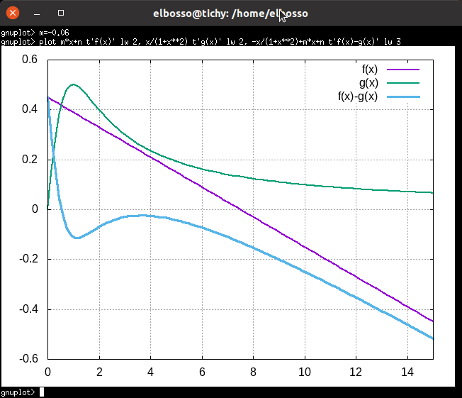
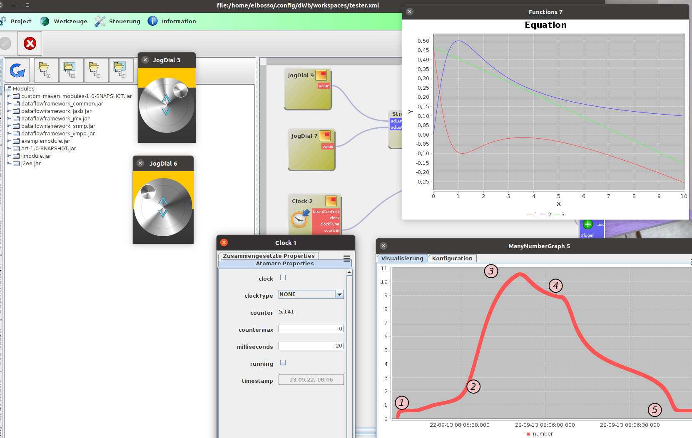

"Funktionale" Programmierung in dWb+

Nach meinem letzten Artikel zum Thema dWb+ ist bereits einige Zeit vergangen. Ich habe lange überlegt, wie ich eine Anwendung schreiben könnte, die mir gestattet, mit einem System herumzuspielen, das ich aus dem Buch von Prof.Strogatz kannte.
Das System zeigt, dass ein System, dessen Randbedingungen man modifiziert in einen anderen stabilen Fixpunkt wandern kann und dort auch verbleibt, wenn man die ursprüngliche Konfiguration wiederherstellt - um das System dazu zu bewegen, den initialen stabilen Fixpunkt wieder einzunehmen ist unter Umständen eine noch drastischere Änderung der Randbedingungen nötig. Die Beschreibung des Systems als Differentialgleichung lautet:

mit

und

Daraus ergibt sich

Mit den Werten m=-0.04 und n=0.45 ergibt sich für die drei Funktionen:

Darstellung von f(x), g(x) und f(x)-g(x)Man erkennt schnell die drei reellen Nullstellen - die befinden sich dort, wo sich f(x) und g(x) jeweils schneiden. Von links nach rechts handelt es sich dabei um einen stabilen Fixpunkt, gefolgt von einem instabilen und einem weiteren stabilen Fixpunkt. Diese Nullstellenanalyse ist wesentlich einfacher, als die Nullstellen des bestimmenden Polynoms

rechnerisch zu bestimmen - der Vollständigkeit halber: sie sind 0.5629613339656534 sowie 2.4161333991332405 und 8.270905266901107.
Das System hat zwei freie Parameter: m und n. Ändert man diese, verschiebt man in der Darstellung die Linie bzw. ändert ihre Steigung. Es ist klar, dass damit die Schnittpunkte mit g(x) und damit die Nullstellen und Fixpunkte des Systems ebenfalls verschoben werden und bei entsprechender Wahl der Parameter ganz verschwinden Das folgende Beispiel zeigt dies bei Wahl des Parameters n=0.57:

Verschwinden der zwei linken Fixpunkte bei Änderung des Parameters nSorgt man dafür, dass die beiden linken Fixpunkte verschwinden, wird das System in den rechten hineinlaufen und wenn man die Änderungen nicht schnell genug rückgängig macht, befindet sich das System bereits auf der rechten Seite des instabilen Fixpunktes - man kann seine Entwicklung hin zum rechten Fixpunkt dann nicht mehr aufhalten.
Um das System davon zu überzeugen, wieder in den linken stabilen Fixpunkt zurückzukehren, muss man dafür sorgen, den rechten und den instabilen Fixpunkt verschwinden zu lassen - etwas, das nur durch drastische Überhöhung des Parameters m zu erreichen ist. Hier ist ein Beispiel dafür mit m=-0.06 dargestellt:

Verschwinden der zwei rechten Fixpunkte bei Änderung des Parameters mAll das ist natürlich nicht annähernd so erhellend, wenn man diese Experimente nicht interaktiv druchführen und ein wenig mit den Parametern spielen kann. daher habe ich entsprechende Module in dWb+ geschaffen, mit denen man die Parameter der Systemgleichung (oder Funktion) interaktiv variieren und die Auswirkung auf die Entwicklung des Systems sofort studieren kann:

Ein dWb+ Workspace zur interaktiven Exploration des SystemverhaltensMan sieht die zwei Eingabeelemente zur Modifikation der Parameter m und n links, rechts oben sind die definierenden Funktionen dargestellt. Darunter findet man den Graph des Systemzustandes. Bei (1) befindet sich das System im linken Fixpunkt. Anschließend erfolgte eine Steigerung des Parameters n bis zum Verschwinden der beiden linken Fixpunkte, das gleichzeitig den rechten Fixpunkt bis jenseits der 10 verschob und dafür sorgte, dass sich das System in Richtung dieses Fixpunktes bewegte (2), den es schließlich auch erreichte (3). Anschließend wurde der Parameter n wieder auf den initialen Wert zurückgesetzt, was aber wie beschrieben dafür sorgte, dass das System im rechten Fixpunkt (4) hängenblieb. Erst die Erhöhung des Parameters m sorgte dann dafür, dass die beiden rechten Fixpunkte verschwanden und das System sich wieder in den ursprünglichen zurückbewegen (5) konnte.


Vor 5 Jahren hier im Blog
-
Alte Rechner zukunftsfähig (?)
01.05.2019
Ich mache immer wieder gerne Experimente mit Terminalsessions - meistens wegen der zentral möglichen Administration. Nunhabe ich das Thema von neuem angepackt: wegen einem alten(sehr alten) Laptop, der bei mir schon so lange im Schrank lag, dass sogar die BIOS-Batterie inzwischen leer war...
Weiterlesen...
Tags
Android Basteln C und C++ Chaos Datenbanken Docker dWb+ ESP Wifi Garten Geo Git(lab|hub) Go GUI Gui Hardware Java Jupyter Komponenten Links Linux Markdown Markup Music Numerik PKI-X.509-CA Python QBrowser Rants Raspi Revisited Security Software-Test sQLshell TeleGrafana Verschiedenes Video Virtualisierung Windows Upcoming...
Neueste Artikel
- Graphics2D Implementierung für Java mit verlegtem Koordinatenursprung
Es gibt seit vielen Jahren immer mal wieder Leute, die im Internet fragen, ob man in Javas diversen Methoden zum Zeichnen von Graphiken das Koordinatensystem so ändern könnte, dass sich der Koordinatenursprung links unten befindet und die positive y-Achse nach oben weist. Meist sind die Antworten dann, dass eine Affine Transformation eingeschaltet werden solle, die das Bild spiegelt.
Weiterlesen... - Unerwartete Probleme bei der Software Raid5 Erweiterung
Ich bin an die Grenzen meiner Storagelösung gestoßen - es musste mehr Platz her...
Weiterlesen... - Die sQLshell ist nun cloudnative!
Die sQLshell hat eine weitere Integration erfahren - obwohl ich eigentlich selber nicht viel dazu tun musste: Es existiert ein Projekt/Produkt namens steampipe, dessen Slogan ist select * from cloud; - Im Prinzip eine Wrapperschicht um diverse (laut Eigenwerbung mehr als 140) (cloud) data sources.
Weiterlesen...
Manche nennen es Blog, manche Web-Seite - ich schreibe hier hin und wieder über meine Erlebnisse, Rückschläge und Erleuchtungen bei meinen Hobbies.
Wer daran teilhaben und eventuell sogar davon profitieren möchte, muß damit leben, daß ich hin und wieder kleine Ausflüge in Bereiche mache, die nichts mit IT, Administration oder Softwareentwicklung zu tun haben.
Ich wünsche allen Lesern viel Spaß und hin und wieder einen kleinen AHA!-Effekt...
PS: Meine öffentlichen GitHub-Repositories findet man hier - meine öffentlichen GitLab-Repositories finden sich dagegen hier.